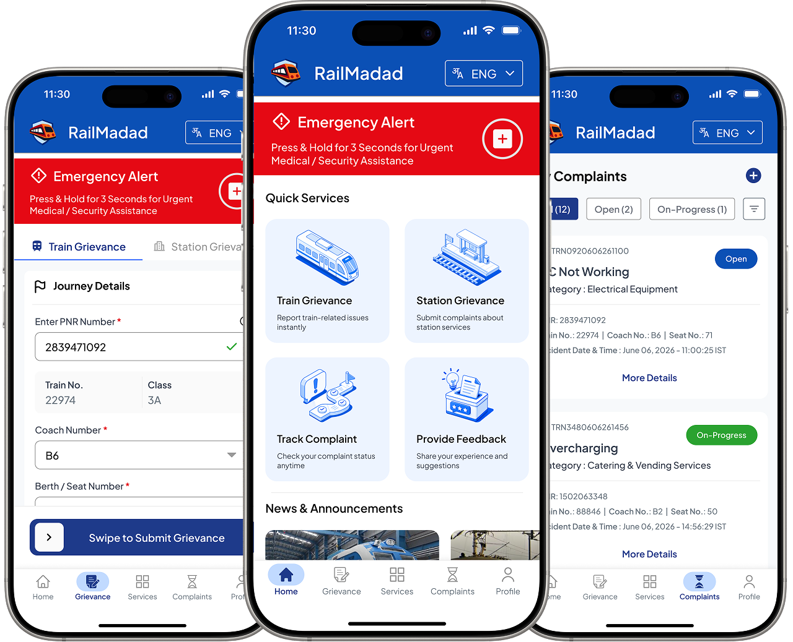
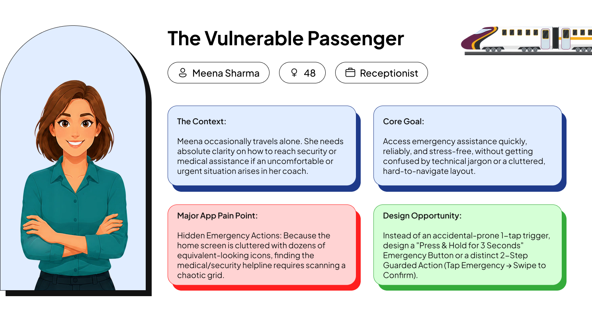
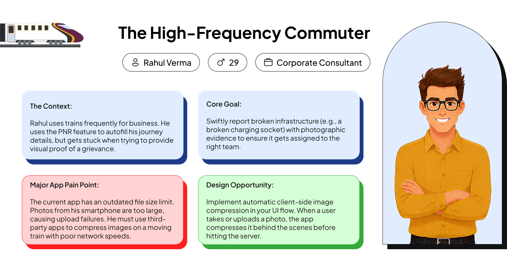
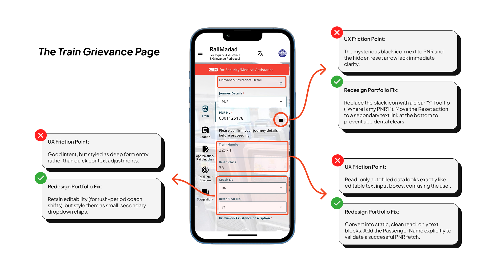
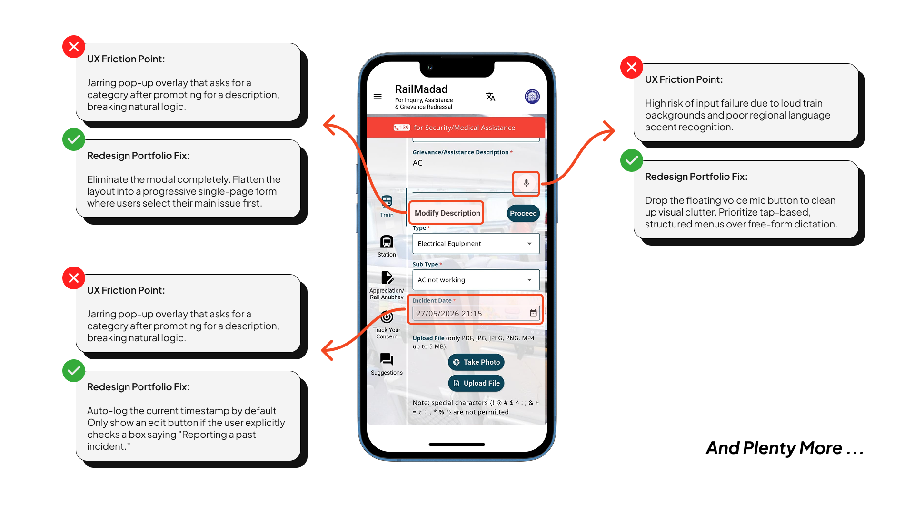
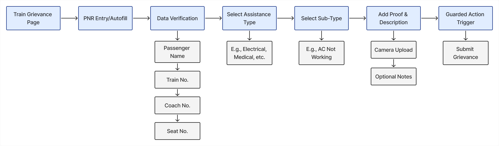
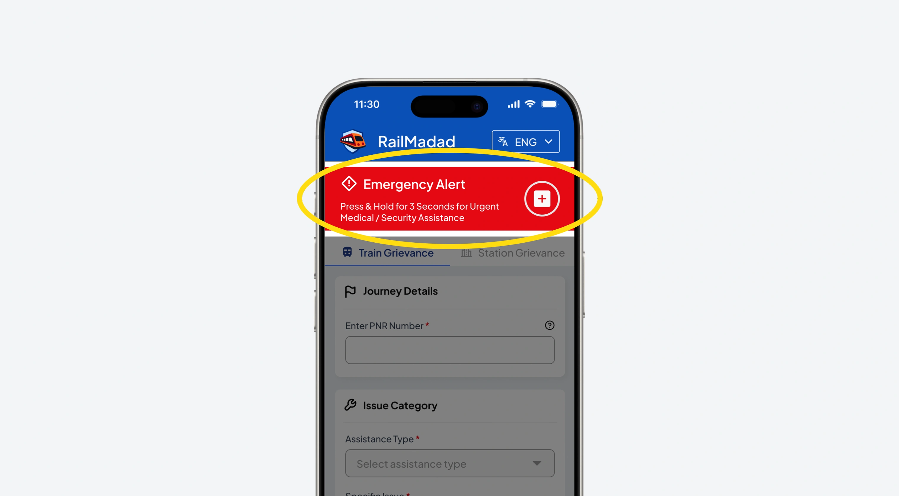
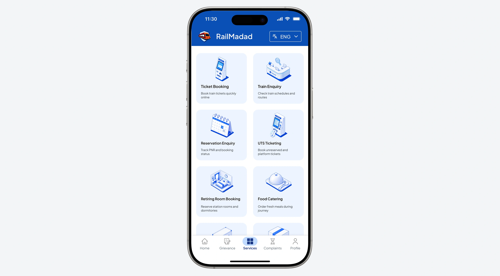

RailMadad - Redefining Railway Support
Simplifying railway support for millions of daily journeys

Overview
RailMadad is the official grievance and assistance portal for Indian Railways, serving millions of daily commuters. While functionally robust, the existing interface suffers from massive visual clutter, multi-layered navigation, and critical friction during high-stress travel emergencies.
Passengers often use the app during stressful situations such as medical emergencies, thefts, or train delays. In these moments, a confusing interface can slow access to critical support and assistance.
This mobile redesign simplifies the experience by restructuring the information architecture for faster, more intuitive navigation. The focus is on reducing friction and making essential actions easier to access.
Discovery & Research Framework
Before designing a single pixel, I needed to look past the surface interface and diagnose the real root causes of friction in the current app. I approached this through a multi-layered research process that combined real user sentiment, target user behavior, expert evaluation, and logical flow restructuring.
Listening to the Millions
To gather unvarnished qualitative data at scale, I analyzed thousands of public app store reviews. This process helped uncover raw passenger frustrations, ranging from inconsistent authentication errors and slow response times to confusing menu navigation, revealing the key pain points behind real world user drop offs.
Designing for Diverse Needs
RailMadad caters to an incredibly diverse national demographic. To ground my design choices, I established two distinct target user personas based on my research: The Vulnerable Passenger (who experiences high stress and lower tech-literacy during transit emergencies) and The High-Frequency Commuter (who values sheer efficiency, speed, and automated utilities).


Heuristic Evaluation
I conducted a rigorous heuristic analysis of the existing RailMadad interface to diagnose systemic layout problems. By breaking down the screens step-by-step, I flagged critical usability violations, such as hidden primary actions, high cognitive data loads, and a lack of clear visual feedback during form submission.


Information Architecture (IA)
To bridge the gap between user problems and a seamless UI solution, I re-engineered the logical flow of the app. This structural blueprint defines a linear path for the grievance workflow, streamlining everything from data entry and automated validation blocks to selecting specialized assistance types and attaching supporting media.

Onboarding Experience
The redesigned onboarding uses a problem-to-solution story across three screens to address common traveler concerns and set clear expectations. It begins by highlighting real transit issues such as medical emergencies, breakdowns, and unhygienic coaches. These concerns are visually transformed from red alert indicators into reassuring green resolution markers, reinforcing trust. The flow emphasizes easy seat-based reporting, real-time tracking, and a clear “Get Started” action to drive engagement.
Frictionless Authentication
Securing an account on a high traffic public utility application requires a delicate balance between rigorous security protocols and zero friction user pathways. The authentication suite, comprising the Log In, Forgot Password, and Sign Up states, is unified by a highly structured layout that minimizes cognitive load during the entry process. The entry points employ a clean tabbed navigation system at the top, allowing users to switch effortlessly between logging in and registering without disorienting page jumps.
Log In Interface
The Log In screen provides a secure and accessible entry point for returning users. A tabbed toggle enables quick switching between login and registration, while credential fields are arranged in a simple linear layout to reduce effort. The Captcha includes refresh and audio-assistance options for accessibility. A persistent header with a language selector supports multilingual access.
Forgot Password Recovery
The Forgot Password Recovery screen provides a simple and efficient path for users to regain account access. A clear back-navigation option returns users to the login page, while a single-column form requests the registered contact identifier. An accessible Captcha verifies identity before users proceed via the prominent confirmation button.
Sign Up & Dynamic Validation
The Sign Up screen is designed to support efficient account creation while reducing input errors. A clear form structure organizes personal details, contact information, and credential setup into an easy-to-follow flow. To improve usability, a live password validation section provides real-time feedback on security requirements such as length, character types, and complexity rules. This immediate guidance helps users meet password criteria before submission, minimizing errors and improving completion rates.
The Train Grievance Form
The Train Grievance Form serves as the core functional engine of the RailMadad application. Filing a complaint on a moving train is often done under stressful conditions with unstable network connectivity. To accommodate these real-world constraints, the entire form is re-engineered as a single-page progressive layout, dividing complex data collection into highly structured, error-resistant visual buckets.
Emergency Alert (Press & Hold)
Positioned at the absolute top of the grievance interface is a high-visibility, persistent Emergency Alert banner colored in a high-contrast safety red. Designed specifically for critical scenarios like severe medical crises or security threats, it bypasses the standard form entirely.
- Accidental Trigger Prevention: To prevent false alarms caused by accidental taps while holding a phone on a moving, bumpy train, the button utilizes a "Press & Hold for 3 Seconds" interaction pattern.
- Immediate Utility: This physical duration gate ensures that only intentional actions trigger the high-priority medical or security assistance protocols, while its placement guarantees it is the first element a panicked user sees.

Journey Details & Auto-Fill Efficiency
Manual typing is a major source of form friction and data errors. The Journey Details section eliminates this by making the passenger's PNR (Passenger Name Record) number the central anchor of the data entry process.
- Smart Verification: When a user types or pastes their PNR into the primary input field, the system runs an instant validation check, marked by a clear green success checkmark.
- Contextual Auto-Fill: Once verified, the interface automatically fetches and displays the train number (22974) and travel class (3A) in read-only informational blocks. This saves the user from recalling or looking up complex transit numbers.
Issue Category Section
To ensure grievances are instantly routed to the correct railway department (e.g., electrical, medical, cleaning), the Issue Category block utilizes a two-tier nested selection system.
- Cognitive Load Reduction: Instead of forcing the passenger to scroll through hundreds of unorganized complaint types, the user first selects a broad Assistance Type (such as Electrical Equipment).
- Specific Mapping: This choice dynamically updates the Specific Issue dropdown below it, displaying only relevant sub-categories (such as AC - Not Working / Failure). This progressive disclosure prevents user confusion and accelerates form completion.
Evidence & Details Section
The final segment provides the authorities with the context needed to resolve the logged issue effectively. It combines rich multimedia attachments with descriptive text inputs.
- Dual Capture Vectors: Clear, side-by-side action buttons allow users to either launch the native device camera to "Take Photo" immediately or "Upload File" from their local storage.
- Transparent System Feedback: Attached media files are displayed as visual cards complete with thumbnail previews, exact filenames, file sizes, and explicit red trash icons for instant removal.
- Low-Network Guardrails: An informational notice explicitly warns the user that images are automatically compressed to accommodate low-network conditions on moving trains. Setting this expectation upfront alleviates user anxiety regarding slow upload speeds or dropped connections.
The Station Grievance Form
The Station Grievance Form adapts the application's core data entry architecture for passengers on station premises, while maintaining a high priority emergency banner and focusing the layout on station related infrastructure issues. Accessible via a sub navigation tab, the interface front loads the "Issue Category" section to quickly isolate problems such as cleanliness or facility failures.
A dedicated "Station Details" section replaces free text inputs with structured dropdowns for station name and platform number, supported by a validated PNR field for quick verification of travel data. The form concludes with an "Evidence & Details" area for uploading media and adding notes, secured by a "Swipe to Submit Grievance" gesture to reduce accidental submissions in crowded station environments.
Ancillary Services Hub
The Services dashboard serves as a centralized, high accessibility utility directory designed to streamline a traveler’s transit experience from a single launch point. Instead of cluttering the primary app with redundant systems, this interface acts as an efficient web and application redirection hub.
Core utilities such as Ticket Booking, UTS Ticketing, Food Catering, and Reservation Enquiries are organized in a clean two column grid with uniform icons and clear labels. This grouping brings multiple public platforms into one cohesive interface, enabling quick one tap access and creating a more seamless digital travel experience.

Complaints Management
Filing a complaint is only the first step in a public utility ecosystem; providing continuous transparency, tracking, and user control over active tickets is what ultimately builds user trust. The Complaints module is redesigned as a dashboard that answers the user’s key question: “What is happening with my request?” By structuring post submission actions into clear informational layers, the interface transforms a traditionally opaque administrative process into an open, interactive, and self contained management suite.
Track Status & Live Timeline
When a commuter expands a specific ticket from their main history feed, they are taken into a dedicated Complaint Details view. This screen presents all originally submitted information while emphasizing a primary action to check real time status through a dynamic timeline view.
- Complaint Overview & Status Tracking: Displays all submitted ticket details in a structured format and provides a primary action to open real time status updates through a dynamic timeline view.
- End to End Progress Visibility: Provides a clear timeline of the complaint’s lifecycle, from registration to resolution.
Apply Filter & Smart Empty States
To help frequent travelers manage historical and ongoing reports, the interface includes a dedicated Filters module that simplifies navigation through large complaint histories. Users can quickly narrow results and focus on the most relevant grievances.
- Advanced Complaint Filtering: Allows users to refine complaint records using chip based filters for complaint type, status, and incident date, making large histories easier to navigate.
- Smart Empty State Handling: When no results match the selected filters, the system displays active filter tags for clarity and provides a prominent "+ New Complaint" action to encourage the next step.
Close Grievance Protocol
The Complaints module empowers users with direct control over their active grievances, ensuring that resolved issues can be managed without waiting for administrative intervention. This promotes a more efficient and user centered complaint management experience.
- User Controlled Grievance Closure: Allows passengers to manually close or cancel a complaint directly from the ticket details or live status timeline when an issue has already been resolved.
- Workflow Optimization: Removes self resolved complaints from active processing queues, helping maintain accurate records and reducing unnecessary backend workload.
Profile & Account Settings
The Profile hub provides a centralized space for managing account information, preferences, and support resources. A clear, section-based layout organizes profile settings, legal information, and help options, enabling users to quickly access key account functions and securely sign out from a single location.
Edit Profile & Secure Configuration
The Update Profile interface allows users to modify personal information through a familiar and structured form experience. Existing profile details are pre populated, enabling quick updates while maintaining consistency across the application.
- Seamless Profile Editing: Pre filled input fields allow users to review and update personal information efficiently with minimal effort.
- Secure Information Updates: Integrated password validation and Captcha verification help protect account changes while ensuring data accuracy and security.
Dynamic & Contextual Feedback System
The Provide Feedback interface simplifies user input by introducing an emoji-based satisfaction rating scale for quick and intuitive responses. An optional feedback field allows users to share additional comments, while a dynamic placeholder adapts to the selected rating to encourage meaningful participation:
- Positive State Response: If a user taps an "Excellent" rating, the text container placeholder dynamically alters to state: "Tell us what made your experience excellent...", priming the user to share specific highlights of their journey.
- Negative State Response: If a user selects a "Terrible" rating, the placeholder shifts to text saying: "Tell us what went wrong and how we can improve...", empathizing with their frustration and providing a clear framework for constructive criticism.
This tailored approach transforms a static form into an adaptive, conversational touchpoint, making user feedback feel highly relevant and less demanding to complete.
Reflection & Takeaways
Redesigning RailMadad was both a significant challenge and a valuable learning experience. As a platform serving millions of daily commuters, every design decision impacts safety, comfort, and accessibility. This project helped me move beyond creating visually appealing interfaces to building reliable, user-centered, and high-accessibility solutions for real-world needs.
Key Learnings
- Designing for High-Stress Environments: Users often face anxiety, time pressure, and poor connectivity while traveling. This led to features like Emergency SOS and Swipe to Submit, emphasizing context-aware interaction design.
- Accessibility Over Aesthetics: This project reinforced the importance of accessibility, high-contrast visuals, clear iconography, and localized experiences over purely visual trends.
- Data Organization & Progressive Disclosure: Using progressive disclosure, structured forms, and smart auto-fills helped reduce cognitive overload and create a smoother user journey.
Future Scope & Next Steps
If I were to take this project into the next phase of development, my immediate priority would be to conduct field usability testing. I would test high-fidelity interactive prototypes directly with diverse commuter groups at busy railway stations to evaluate how effectively individuals of varying age groups and tech-literacy levels can navigate the new layouts.
Additionally, I would measure success through specific, quantifiable data metrics:
- Task Success Rate: Measuring the average speed and completion rate of filing a standard grievance form.
- Error Rate Reduction: Monitoring whether the live password checklists and PNR auto-fills successfully decrease form validation failures.
- False Alarm Metrics: Tracking if the physical duration gate on the SOS alert successfully minimizes accidental emergency triggers.